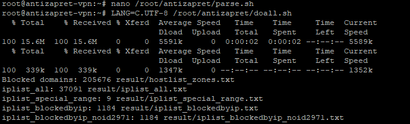

Установил АнтиЗапрет на личный сервер, но он у меня не работает. Картинки в ютуб не грузит и на заблокированные сайты не заходит. Использую Ubuntu 20.04 и хостинг провайдера Aeza.net
Это мне нужно отредактировать parse.sh на сервере?
ага
{kind=link}
Но тут уже стоит это строка, хотя я ничего не редактировал
Что конкретно не понятно?
Заработало всё кроме youtube. Картинки так и не грузит
parse.sh:
idn: tld_check_4z (position 5): Code points prohibited by top-level domain
уже нашел решение

Я проделал данную операцию, но не помогло, есть ли еще какие-то решения?
UPD: Заработало через 2 минуты!
после добавления ютуба, в нем появилась реклама, это баг или фича?
Ютуб рекламу отключил для россиян, россиян он определяет по геолокации (по IP, говоря языком обывателя). Сервер у вас за рубежом. Раз вы решили гонять через него ютуб, то для ютуба вы больше не в России, а в той стране, где сервер. А значит, получайте рекламу.
я предполагал это, но сервер антизапрета тоже за рубежом, в германии, и никакой рекламы.
{kind=link}
Через “обычный” Antizapret ютуб не проксируется (кроме какого-то там поддомена, с которого грузятся аватарки). Во-первых, потому что в России он не заблокирован (всякие ДНР не в счёт), во-вторых, потому что трафик будет колоссальный и никаких мощностей и денег не хватит (проект живёт на пожертвования), если через Antizapret все начнут гонять видео.
Вы же, как я понял, на своём сервере добавили ютуб в список проксируемых ресурсов (как вы написали “после добавления ютуба”).
Поэтому, при использовании “обычного” Antizapret ютуб видит ваш российский IP-адрес и рекламу не даёт, а при проксировании через ваш сервер - видит адрес вашего сервера. Если вы и правда его добавили в список проксируемых ресурсов, уберите его оттуда.
Ребята, извините, за поднятие некро-темы, но все-таки не могу понять.
Этот контейнер всё еще рабочий или нет?
https://bitbucket.org/anticensority/antizapret-vpn-container/src/master/
Поставил всё по инструкции через lxc но не работает!
К VPN спокойно подключаюсь с телефона и компа, но ни один заблокированный сайт не рабоает -ни из списка антизапрета, ни из добавленного мной. Работает всё напрямую только.
Сразу увидел проблему, что скрипт doall.sh тупо не срабатывает, видимо потому что там первая же из ссылок вызывает 404- она так же 404 вызывает и со всех других устройств, по ходу файл удален\перенесен…?
{kind=link}
поставил даже какие-то патчи потом и заменил строку, поискав поиском по теме основной закрепленной- но результа тот же- скрипт не работает…видимо в этом проблема и не запускается основное что-то? Есть ли способы починить или не мучаться и ставить неофициальные контейнеры?
получается линк https://raw.githubusercontent.com/zapret-info/z-i/master/dump.csv - мертв
хотя линк https://raw.githubusercontent.com/zapret-info/z-i/master/nxdomain.txt - все еще работает…
это я в файле update.sh смотрю
Лично я бы советовал использовать докер
По крайней мере, там не нужно вылавливать какие-то патчи по темам, кроме того, там более широкий спектр протоколов.
спасибо, отложу на крайний случай, если уж совсем ничего не получится…
а пока что… удалось еще в теме найти фикс для update.sh от @nzkhammatov
теперь doall.sh работает
{kind=link}
Однако полной работоспособности снова не получилось.
Вообще работает как-то странно…
lostfilm и chatgpt открывает , но ютуб, инстаграм -не открываются, хотя доменов я добавил пару десятков, в которые и чатгпт и openai и ютуб входят…этот же список использовал для плагина в браузер с прокси- все работает…
rutracker, к слову, тоже не открывается, не могу понять закономерность - почему работает чатгпт (который вручную вводил), но остальное то что вручную вводил - не работает, да и рутрекер который должен без добавления работать-не работает…